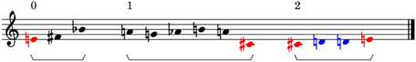

PitchTree¶
-
class
baca.tools.PitchTree.PitchTree(items=None, item_class=None)¶ Pitch tree.
Initializes numbered pitch tree:
>>> items = [[16, 18, 10], [9, 7, 8, 11, 9, 1], [0, 2, 3, 5]] >>> tree = baca.PitchTree(items=items) >>> abjad.show(tree, strict=89)
Initializes named pitch tree:
>>> items = [ ... ['E5', 'F#5', 'Bb4'], ... ['A4', 'G4', 'Ab4', 'B4', 'A4', 'C#4'], ... ['C4', 'D4', 'Eb4', 'F4'], ... ] >>> tree = baca.PitchTree( ... items=items, ... item_class=abjad.NamedPitch, ... ) >>> abjad.show(tree, strict=89)
Initializes numbered pitch-class tree:
>>> items = [[16, 18, 10], [9, 7, 8, 11, 9, 1], [0, 2, 3, 5]] >>> tree = baca.PitchTree( ... items=items, ... item_class=abjad.NumberedPitchClass, ... ) >>> abjad.show(tree, strict=89)
Initializes named pitch-class tree:
>>> items = [ ... ['E5', 'F#5', 'Bb4'], ... ['A4', 'G4', 'Ab4', 'B4', 'A4', 'C#4'], ... ['C4', 'D4', 'Eb4', 'F4'], ... ] >>> tree = baca.PitchTree( ... items=items, ... item_class=abjad.NamedPitchClass, ... ) >>> abjad.show(tree, strict=89)
Initializes from other trees:
>>> items = [ ... baca.PitchTree([4, 6, 10]), ... baca.PitchTree([9, 7, 8, 11, 9, 1]), ... baca.PitchTree([0, 2, 3, 5]), ... ] >>> tree = baca.PitchTree(items=items) >>> lilypond_file = tree.__illustrate__( ... cell_indices=False, ... ) >>> abjad.show(lilypond_file, strict=89)
Initializes from pitch segments:
>>> items = [ ... abjad.PitchClassSegment([4, 6, 10]), ... abjad.PitchClassSegment([9, 7, 8, 11, 9, 1]), ... abjad.PitchClassSegment([0, 2, 3, 5]), ... ] >>> items = [segment.rotate(n=1) for segment in items] >>> tree = baca.PitchTree(items=items) >>> abjad.show(tree, cell_indices=False, strict=89)
Initializes nested tree:
>>> segment_1 = abjad.PitchClassSegment([4, 6, 10]) >>> segment_2 = abjad.PitchClassSegment([9, 7, 8, 11, 9, 1]) >>> segment_3 = abjad.PitchClassSegment([0, 2, 3, 5]) >>> segment_1 = segment_1.transpose(n=1) >>> segment_2 = segment_2.transpose(n=1) >>> segment_3 = segment_3.transpose(n=1) >>> items = [[segment_1, segment_2], segment_3] >>> tree = baca.PitchTree(items=items) >>> graph(tree) Traceback (most recent call last): File "<stdin>", line 1, in <module> File "/Users/trevorbaca/.virtualenvs/abjad3/lib/python3.6/site-packages/abjadext/book/CodeBlock.py", line 432, in graph raise TypeError('Cannot graph {!r}'.format(type(argument))) TypeError: Cannot graph <class 'baca.tools.PitchTree.PitchTree'>
>>> abjad.show(tree, cell_indices=False, strict=89)
Special methods
-
(Tree).__contains__(argument)¶ Is true when tree contains argument.
Tree contains node:
>>> items = [[[0, 1], [2, 3]], [4, 5]] >>> tree = baca.Tree(items=items)
>>> for node in tree: ... node ... Tree(items=[Tree(items=[Tree(items=0), Tree(items=1)]), Tree(items=[Tree(items=2), Tree(items=3)])]) Tree(items=[Tree(items=4), Tree(items=5)])
>>> tree[-1] in tree True
Tree does not contain node:
>>> tree[-1][-1] in tree False
Returns true or false.
-
(Tree).__eq__(argument)¶ Is true when argument is the same type as tree and when the payload of all subtrees are equal.
Is true when subtrees are equal:
>>> sequence_1 = [[[0, 1], [2, 3]], [4, 5]] >>> tree_1 = baca.Tree(sequence_1) >>> sequence_2 = [[[0, 1], [2, 3]], [4, 5]] >>> tree_2 = baca.Tree(sequence_2) >>> sequence_3 = [[0, 1], [2, 3], [4, 5], [6, 7]] >>> tree_3 = baca.Tree(sequence_3)
>>> tree_1 == tree_1 True
>>> tree_1 == tree_2 True
>>> tree_1 == tree_3 False
>>> tree_2 == tree_1 True
>>> tree_2 == tree_2 True
>>> tree_2 == tree_3 False
>>> tree_3 == tree_1 False
>>> tree_3 == tree_2 False
>>> tree_3 == tree_3 True
Returns true or false.
-
(Tree).__format__(format_specification='')¶ Formats tree.
Formats tree:
>>> items = [[[0, 1], [2, 3]], [4, 5]] >>> tree = baca.Tree(items=items)
>>> abjad.f(tree, strict=89) baca.Tree( items=[ baca.Tree( items=[ baca.Tree( items=[ baca.Tree( items=0, ), baca.Tree( items=1, ), ], ), baca.Tree( items=[ baca.Tree( items=2, ), baca.Tree( items=3, ), ], ), ], ), baca.Tree( items=[ baca.Tree( items=4, ), baca.Tree( items=5, ), ], ), ], )
Returns string.
-
(Tree).__getitem__(argument)¶ Gets node or node slice identified by argument.
Gets node:
>>> items = [[[0, 1], [2, 3]], [4, 5]] >>> tree = baca.Tree(items=items)
>>> tree[-1] Tree(items=[Tree(items=4), Tree(items=5)])
Gets slice:
>>> tree[-1:] [Tree(items=[Tree(items=4), Tree(items=5)])]
Returns node or slice of nodes.
-
(Tree).__hash__()¶ Hashes tree.
Required to be explicitly redefined on Python 3 if __eq__ changes.
Returns integer.
-
__illustrate__(after_cell_spacing=True, brackets=True, cell_indices=True, color_repeats=True, global_staff_size=16, markup_direction=Up, set_classes=False, **keywords)¶ Illustrates pitch tree.
Illustrate tree:
>>> items = [[4, 6, 10], [9, 7, 8, 11, 9, 1], [0, 2, 3, 5]] >>> tree = baca.PitchTree(items=items) >>> lilypond_file = tree.__illustrate__() >>> abjad.show(lilypond_file, strict=89)
Illustrates tree with set-classes:
>>> items = [[4, 6, 10], [9, 7, 8, 11, 9, 1], [0, 2, 3, 5]] >>> tree = baca.PitchTree(items=items) >>> lilypond_file = tree.__illustrate__( ... cell_indices=abjad.Down, ... set_classes=True, ... ) >>> abjad.show(lilypond_file, strict=89)
Illustrates nested tree:
>>> segment_1 = abjad.PitchClassSegment([4, 6, 10]) >>> segment_2 = abjad.PitchClassSegment([9, 7, 8, 11, 9, 1]) >>> segment_3 = abjad.PitchClassSegment([0, 2, 3, 5]) >>> segment_1 = segment_1.transpose(n=1) >>> segment_2 = segment_2.transpose(n=1) >>> segment_3 = segment_3.transpose(n=1) >>> items = [[segment_1, segment_2], segment_3] >>> tree = baca.PitchTree(items=items) >>> lilypond_file = tree.__illustrate__( ... cell_indices=abjad.Down, ... ) >>> abjad.show(lilypond_file, strict=89)
Returns LilyPond file.
-
(Tree).__len__()¶ Gets length of tree.
Gets length of tree:
>>> items = [[[0, 1], [2, 3]], [4, 5]] >>> tree = baca.Tree(items=items)
>>> len(tree) 2
Defined equal to number of nodes in tree at level 1.
Returns nonnegative integer.
-
(Tree).__repr__()¶ Gets interpreter representation of tree.
Gets interpreter representation of tree:
>>> items = [[[0, 1], [2, 3]], [4, 5]] >>> baca.Tree(items=items) Tree(items=[Tree(items=[Tree(items=[Tree(items=0), Tree(items=1)]), Tree(items=[Tree(items=2), Tree(items=3)])]), Tree(items=[Tree(items=4), Tree(items=5)])])
Gets interpreter representation of leaf:
>>> baca.Tree(0) Tree(items=0)
Gets interpreter representation of empty tree:
>>> baca.Tree() Tree()
Returns string.
Methods
-
(Tree).get_payload(nested=False, reverse=False)¶ Gets payload.
Gets payload:
>>> items = [[[0, 1], [2, 3]], [4, 5]] >>> tree = baca.Tree(items=items)
>>> tree.get_payload() [0, 1, 2, 3, 4, 5]
Gets nested payload:
>>> tree.get_payload(nested=True) [[[0, 1], [2, 3]], [4, 5]]
Gets payload in reverse:
>>> tree.get_payload(reverse=True) [5, 4, 3, 2, 1, 0]
Nested payload in reverse is not yet implemented.
Returns list.
-
has_repeats()¶ Is true when tree has repeats.
Has repeats:
>>> items = [[4, 6, 10], [9, 7, 8, 11, 9, 1], [1, 2, 2, 4]] >>> tree = baca.PitchTree(items=items) >>> abjad.show(tree, strict=89)
>>> tree.has_repeats() True
Doesn’t have repeats:
>>> items = [[4, 6, 10], [9, 7, 8, 11, 9, 1], [0, 2, 3, 5]] >>> tree = baca.PitchTree(items=items) >>> abjad.show(tree, strict=89)
>>> tree.has_repeats() False
Returns true or false.
-
invert(axis=None)¶ Inverts pitch tree.
Example tree:
>>> items = [[16, 18, 10], [9, 7, 8, 11, 9, 1], [0, 2, 3, 5]] >>> tree = baca.PitchTree(items=items) >>> abjad.show(tree, strict=89)
Inverts tree about first pitch when axis is none:
>>> inversion = tree.invert() >>> abjad.show(inversion, strict=89)
Inverts tree about pitch 0:
>>> inversion = tree.invert(axis=0) >>> abjad.show(inversion, strict=89)
Inverts tree about pitch 13:
>>> inversion = tree.invert(axis=13) >>> abjad.show(inversion, strict=89)
Returns new tree:
>>> isinstance(inversion, baca.PitchTree) True
-
(Tree).iterate(level=None, reverse=False)¶ Iterates tree at optional level.
Example tree:
>>> items = [[[0, 1], [2, 3]], [4, 5]] >>> tree = baca.Tree(items=items) >>> graph(tree) Traceback (most recent call last): File "<stdin>", line 1, in <module> File "/Users/trevorbaca/.virtualenvs/abjad3/lib/python3.6/site-packages/abjadext/book/CodeBlock.py", line 432, in graph raise TypeError('Cannot graph {!r}'.format(type(argument))) TypeError: Cannot graph <class 'baca.tools.Tree.Tree'>
Iterates all levels:
>>> for node in tree.iterate(): ... node ... Tree(items=[Tree(items=[Tree(items=[Tree(items=0), Tree(items=1)]), Tree(items=[Tree(items=2), Tree(items=3)])]), Tree(items=[Tree(items=4), Tree(items=5)])]) Tree(items=[Tree(items=[Tree(items=0), Tree(items=1)]), Tree(items=[Tree(items=2), Tree(items=3)])]) Tree(items=[Tree(items=0), Tree(items=1)]) Tree(items=0) Tree(items=1) Tree(items=[Tree(items=2), Tree(items=3)]) Tree(items=2) Tree(items=3) Tree(items=[Tree(items=4), Tree(items=5)]) Tree(items=4) Tree(items=5)
Iterates all levels in reverse:
>>> for node in tree.iterate(reverse=True): ... node ... Tree(items=[Tree(items=[Tree(items=[Tree(items=0), Tree(items=1)]), Tree(items=[Tree(items=2), Tree(items=3)])]), Tree(items=[Tree(items=4), Tree(items=5)])]) Tree(items=[Tree(items=4), Tree(items=5)]) Tree(items=5) Tree(items=4) Tree(items=[Tree(items=[Tree(items=0), Tree(items=1)]), Tree(items=[Tree(items=2), Tree(items=3)])]) Tree(items=[Tree(items=2), Tree(items=3)]) Tree(items=3) Tree(items=2) Tree(items=[Tree(items=0), Tree(items=1)]) Tree(items=1) Tree(items=0)
Iterates select levels:
>>> for node in tree.iterate(level=0): ... node ... Tree(items=[Tree(items=[Tree(items=[Tree(items=0), Tree(items=1)]), Tree(items=[Tree(items=2), Tree(items=3)])]), Tree(items=[Tree(items=4), Tree(items=5)])])
>>> for node in tree.iterate(level=1): ... node ... Tree(items=[Tree(items=[Tree(items=0), Tree(items=1)]), Tree(items=[Tree(items=2), Tree(items=3)])]) Tree(items=[Tree(items=4), Tree(items=5)])
>>> for node in tree.iterate(level=2): ... node ... Tree(items=[Tree(items=0), Tree(items=1)]) Tree(items=[Tree(items=2), Tree(items=3)]) Tree(items=4) Tree(items=5)
>>> for node in tree.iterate(level=3): ... node ... Tree(items=0) Tree(items=1) Tree(items=2) Tree(items=3)
>>> for node in tree.iterate(level=-4): ... node ... Tree(items=[Tree(items=[Tree(items=[Tree(items=0), Tree(items=1)]), Tree(items=[Tree(items=2), Tree(items=3)])]), Tree(items=[Tree(items=4), Tree(items=5)])])
>>> for node in tree.iterate(level=-3): ... node ... Tree(items=[Tree(items=[Tree(items=0), Tree(items=1)]), Tree(items=[Tree(items=2), Tree(items=3)])])
>>> for node in tree.iterate(level=-2): ... node ... Tree(items=[Tree(items=0), Tree(items=1)]) Tree(items=[Tree(items=2), Tree(items=3)]) Tree(items=[Tree(items=4), Tree(items=5)])
>>> for node in tree.iterate(level=-1): ... node ... Tree(items=0) Tree(items=1) Tree(items=2) Tree(items=3) Tree(items=4) Tree(items=5)
Iterates select levels in reverse:
>>> for node in tree.iterate(level=0, reverse=True): ... node ... Tree(items=[Tree(items=[Tree(items=[Tree(items=0), Tree(items=1)]), Tree(items=[Tree(items=2), Tree(items=3)])]), Tree(items=[Tree(items=4), Tree(items=5)])])
>>> for node in tree.iterate(level=1, reverse=True): ... node ... Tree(items=[Tree(items=4), Tree(items=5)]) Tree(items=[Tree(items=[Tree(items=0), Tree(items=1)]), Tree(items=[Tree(items=2), Tree(items=3)])])
>>> for node in tree.iterate(level=2, reverse=True): ... node ... Tree(items=5) Tree(items=4) Tree(items=[Tree(items=2), Tree(items=3)]) Tree(items=[Tree(items=0), Tree(items=1)])
>>> for node in tree.iterate(level=3, reverse=True): ... node ... Tree(items=3) Tree(items=2) Tree(items=1) Tree(items=0)
>>> for node in tree.iterate(level=-4, reverse=True): ... node ... Tree(items=[Tree(items=[Tree(items=[Tree(items=0), Tree(items=1)]), Tree(items=[Tree(items=2), Tree(items=3)])]), Tree(items=[Tree(items=4), Tree(items=5)])])
>>> for node in tree.iterate(level=-3, reverse=True): ... node ... Tree(items=[Tree(items=[Tree(items=0), Tree(items=1)]), Tree(items=[Tree(items=2), Tree(items=3)])])
>>> for node in tree.iterate(level=-2, reverse=True): ... node ... Tree(items=[Tree(items=4), Tree(items=5)]) Tree(items=[Tree(items=2), Tree(items=3)]) Tree(items=[Tree(items=0), Tree(items=1)])
>>> for node in tree.iterate(level=-1, reverse=True): ... node ... Tree(items=5) Tree(items=4) Tree(items=3) Tree(items=2) Tree(items=1) Tree(items=0)
Returns generator.
-
retrograde()¶ Gets retrograde of tree.
Example tree:
>>> items = [[16, 18, 10], [9, 7, 8, 11, 9, 1], [0, 2, 3, 5]] >>> tree = baca.PitchTree(items=items) >>> abjad.show(tree, strict=89)
Returns new tree:
>>> isinstance(retrograde, baca.PitchTree) True
-
rotate(n=0)¶ Rotates tree by index n.
Example tree:
>>> items = [[16, 18, 10], [9, 7, 8, 11, 9, 1], [0, 2, 3, 5]] >>> tree = baca.PitchTree(items=items) >>> abjad.show(tree, strict=89)
Returns new tree:
>>> isinstance(rotation, baca.PitchTree) True
-
transpose(n=0)¶ Transposes pitch tree.
Example tree:
>>> items = [[16, 18, 10], [9, 7, 8, 11, 9, 1], [0, 2, 3, 5]] >>> tree = baca.PitchTree(items=items) >>> abjad.show(tree, strict=89)
Transposes tree by positive index:
>>> transposition = tree.transpose(n=13) >>> abjad.show(transposition, strict=89)
Transposes tree by negative index:
>>> transposition = tree.transpose(n=-13) >>> abjad.show(transposition, strict=89)
Transposes tree by zero index:
>>> transposition = tree.transpose(n=0) >>> abjad.show(transposition, strict=89)
Returns new tree:
>>> isinstance(transposition, baca.PitchTree) True
Read-only properties
-
(Tree).item_class¶ Gets item class.
Coerces input:
>>> items = [[1.1, 2.2], [8.8, 9.9]] >>> tree = baca.Tree(items=items, item_class=int)
>>> for node in tree.iterate(level=-1): ... node ... Tree(items=1, item_class=int) Tree(items=2, item_class=int) Tree(items=8, item_class=int) Tree(items=9, item_class=int)
>>> tree.get_payload(nested=True) [[1, 2], [8, 9]]
Defaults to none.
Set to class or none.
Returns class or none.
-
(Tree).items¶ Gets items.
Gets items:
>>> items = [[[0, 1], [2, 3]], [4, 5]] >>> tree = baca.Tree(items=items)
>>> for item in tree.items: ... item ... Tree(items=[Tree(items=[Tree(items=0), Tree(items=1)]), Tree(items=[Tree(items=2), Tree(items=3)])]) Tree(items=[Tree(items=4), Tree(items=5)])
Returns list:
>>> isinstance(tree.items, list) True
-